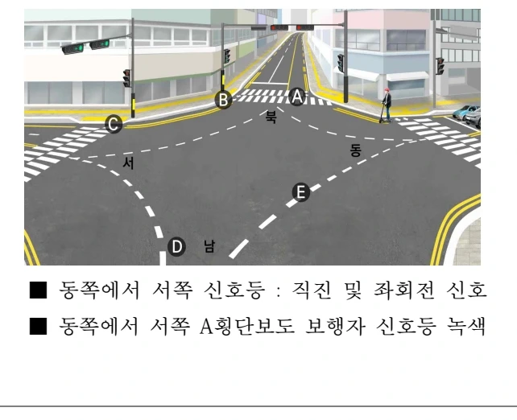

865. 如下图所示，电动滑板车驾驶人想要左转时，最安全的两种方法是？

- ①驾驶电动滑板车进入A人行横道后，在B处等待D方向的绿灯。
- ②推着电动滑板车进入A人行横道后，在B处等待D方向的绿灯。
- ③驾驶电动滑板车，为了驶向E方向，沿交叉路口中心内侧左转。
- ④驾驶电动滑板车直行至B处后，等待D方向的绿灯。
- ⑤驾驶电动滑板车直行至C处后，立即从B处向D方向直行。
查看答案
答案
② 推着电动滑板车进入A人行横道后，在B处等待D方向的绿灯。
④ 驾驶电动滑板车直行至B处后，等待D方向的绿灯。
依据
道路交通法第二十五条第三项。自行车等驾驶员在交叉路口欲左转时，必须先移至道路右侧边缘，缓慢行驶，然后利用交叉路口边缘左转。政府法制部法律解释案。议程编号 17-0078。 （以下自行车目前归类为自行车等）根据道路交通法第25条第2项规定，所有车辆驾驶人欲在路口左转时，必须提前沿道路中心线缓慢行驶，并利用路口中心内侧左转。但在市、省警察厅长根据路口情况认定特别必要并指定的地点，车辆可以从路口中心外侧通过（但书），同条第3款规定，尽管有同条第2款的规定，自行车驾驶者在十字路口欲左转时，必须提前紧贴道路右侧边缘，缓慢行驶，并利用十字路口边缘左转。它规定了骑自行车的人在十字路口应该如何左转。 《道路交通法》第25条第3款规定，骑自行车的人不能根据左转信号立即在交叉路口左转，而必须根据信号留在道路的右侧边缘，沿行驶方向直行分两次直行完成左转。 这是否意味着所谓的“勾转”，即以“直行直行”的方式左转，还是意味着自行车驾驶员在交叉路口可以根据左转信号立即左转，但必须使用驾驶员右侧的道路部分左转，例如根据同条第二款向同一方向左转的汽车？ 《道路交通法》第25条第3项规定“勾转”，是指根据行进方向直行信号灯以“两步直行-直行”的方式左转，骑自行车者与汽车驾驶员一样，在绿色左转箭头信号灯等处立即左转，被解释为违反规定。但民事请愿人对警察厅的上述解释有异议，并要求政府部门立法解释法律。 2.结论。 《道路交通法》第25条第3项规定骑车者等在路口左转的方式，是指“勾转”，是指骑车者在路口不能根据左转信号立即左转，而必须根据行驶方向直行信号，紧贴道路右侧边缘以“两步直行”方式左转。
依据文字为学习用机器翻译。